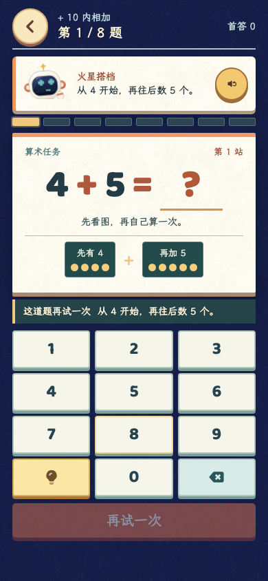
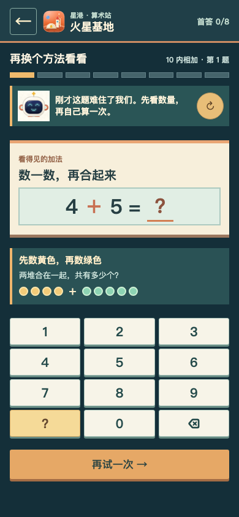

火星基地 · 答错后的同题再试
同为 390 × 844 手机视口；右侧题目和数字沿用左侧实际生成的题。
当前实现
复练中提案


game-ui-ux
题目、数量图和数字键盘同屏可见；提示是显眼但不强制的辅助。
level-design
答错后先保留原题和图示，自己再算；变式留到两题后，避免立即重复答案。
game-feel
轻反馈确认“自己算出来”，进度更新清楚；不用强烈摇晃或闪屏惩罚错误。